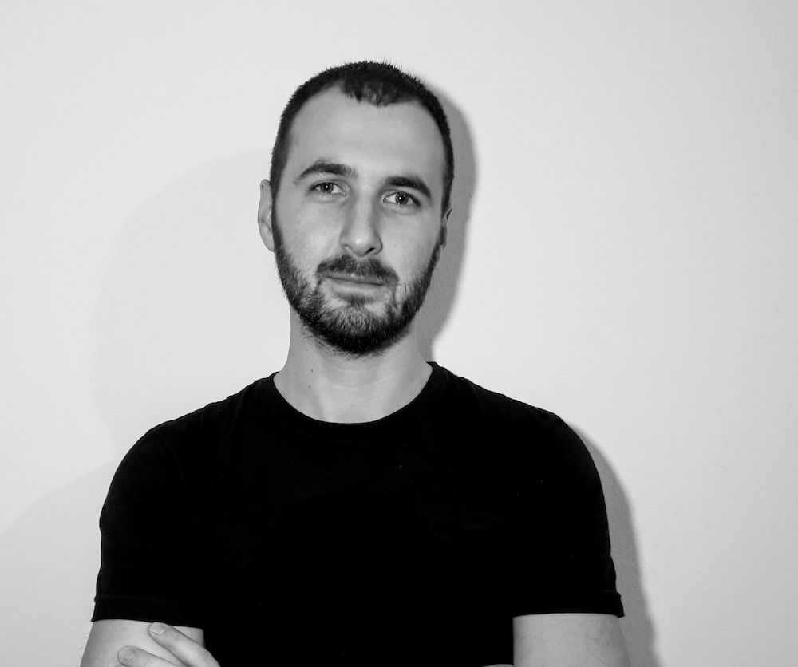

Marko Arsić
/Марко Арсић/
 A polyglot developer deeply interested in high performance, software architecture and generally
solving
complex problems. I’m dedicated to writing highly maintainable and reliable code while following
best
coding practices. In programming bussines more than five years. Mobile is my passion.
If you think that I can help you with something feel free to ping me anytime and say Hi! via email
at marsicdev[at]gmail.com or social networks listed on top.
Skills and tecnology
Sometimes it’s hard and sometimes it’s not. With some technologies and languages I enjoy working and with some other not that much.
Curriculum Vitae
Programming is what I do.
© marsicdev by Marko Arsić